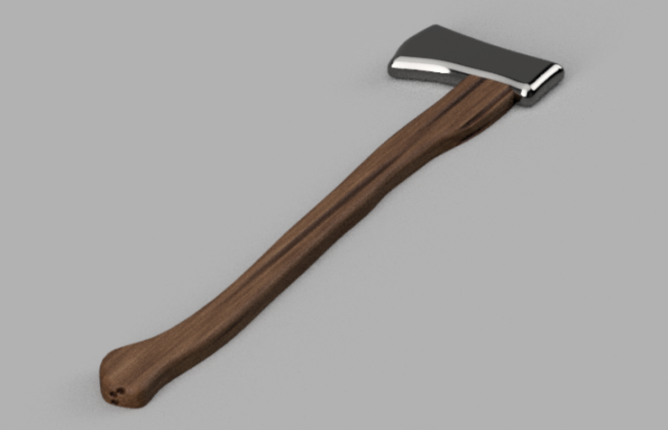

Design and Manufacturing

Axe

Bed Room

Sword
Bow

Shield
The images above are 3D models I created with Fusion 360 and Shapr3D for my Design for Manufacturing units. My main method for creating these models is first taking an image from the internet, putting it in my software, and then tracing around the image with the line sketch tool. I then raise the sketch into an actual model and polish it up by smoothing out edges and other details. You might notice that some of the images have textures and lighting — that is because I rendered them with the built-in rendering system that Fusion 360 offers.